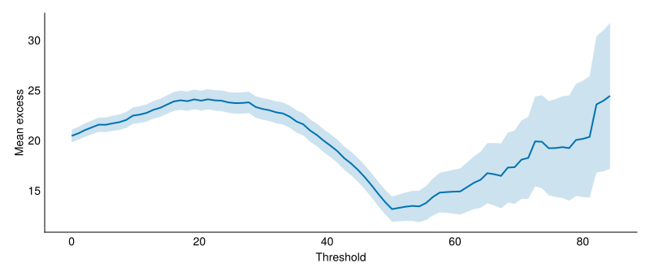
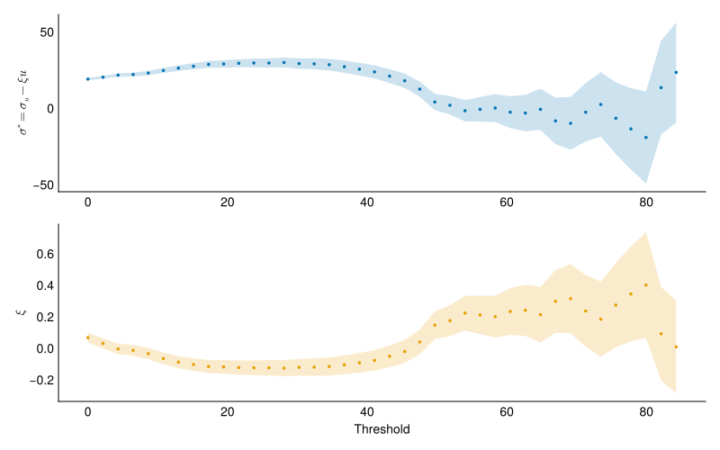

Week 05 Practice Problems (Optional)
We will work on these questions in class Wednesday
Threshold choice
An analyst has 4,500 independent observations from a monitoring station. They produce the following mean residual life plot and parameter stability plot.


The analyst writes:
I chose a threshold of 20 because the mean residual life plot is roughly linear from that point onward and this gives me over 1,000 exceedances, which ensures tight confidence intervals on the GPD parameters.
- Is the analyst’s reading of the MRL plot correct?
The MRL plot is not linear from 20. Below about 50, the MRL plot is flat or U-shaped.
- What is wrong with the analyst’s reasoning?
The analyst is prioritizing sample size (tight confidence intervals) over model validity. A threshold of 20 is deep in the body of the distribution, not the tail. The GPD is an asymptotic approximation that holds for high thresholds, and picking a threshold that is too low introduces bias: the fitted model may not describe the tail well even though the estimated uncertainty may be small.
- What threshold would you recommend, and why?
The parameter stability plot shows \(\sigma^*\) and \(\xi\) stabilizing around 50. A threshold of 50 is the lowest value at which the GPD approximation holds, which follows Coles’s guideline: as low a threshold as possible subject to the model providing a reasonable approximation. Above 50, the mean also excess increases linearly. A better threshold would be around 50.
Annualizing a POT analysis
A coastal tide gauge has 40 years of continuous daily data. Using a threshold of \(u = 2.5\text{ m}\) and declustering, an analyst identifies 120 independent exceedances. A GPD fit to those exceedances gives \(P(X > 3.5\text{ m} \mid X > 2.5\text{ m}) = 0.05\).
- What is the threshold exceedance rate \(\lambda\) in events per year?
\[ \lambda = \frac{120}{40} = 3 \text{ events/year} \]
- What is the rate of events above 3.5 m specifically?
Each exceedance of \(u\) independently exceeds 3.5 m with probability 0.05 (the GPD survival probability). Thinning a Poisson process gives another Poisson process, so events above 3.5 m arrive at rate
\[ \lambda_{3.5} = \lambda \times P(X > 3.5 \mid X > 2.5) = 3 \times 0.05 = 0.15 \text{ events/year} \]
- Let \(N\) be the number of events above 3.5 m in one year, and model it as Poisson with rate \(\lambda_{3.5}\) from part (b). Its PMF and CDF are
\[ P(N = k) = \frac{\lambda_{3.5}^{k}}{k!} e^{-\lambda_{3.5}}, \qquad P(N \le k) = \sum_{j=0}^{k} \frac{\lambda_{3.5}^{j}}{j!} e^{-\lambda_{3.5}} \]
Write an expression for the probability of at least one such event in a year. Compute it.
Let \(N\) be the number of events above 3.5 m in one year. \(N \sim \text{Poisson}(\lambda_{3.5})\), so
\[ P(N \ge 1) = 1 - P(N = 0) = 1 - e^{-\lambda_{3.5}} = 1 - e^{-0.15} \approx 0.139 \]
- If the waiting times between events are exponential, what is the mean waiting time between events above 3.5 m? How does it compare with \(1 / P(N \ge 1)\) from part (c), and what does each one measure?
Under the Poisson model, the waiting time between events above 3.5 m is exponential with rate \(\lambda_{3.5}\), so the return period is the mean waiting time:
\[ T = \frac{1}{\lambda_{3.5}} = \frac{1}{0.15} \]
This is the \(T\) in the return level formula \(x_T = u + \frac{\sigma}{\xi}\left[(T\lambda)^{\xi} - 1\right]\): setting \(x_T = 3.5\) m there gives back this \(T\).
Inverting the annual probability from part (c) answers a different question, the return period of the annual maximum:
\[ T_{\text{annual}} = \frac{1}{1 - e^{-\lambda_{3.5}}} \]
T = 6.67 years, T_annual = 7.18 yearsThe two agree for rare events, since \(1 - e^{-\lambda} \approx \lambda\) when \(\lambda\) is small, and differ here because an event above 3.5 m is not rare on an annual scale. Both rest on events arriving independently at a constant rate, which declustering is meant to ensure: without it, a single multi-day storm would count as several arrivals.
GPD return level by hand
A river gauge has 50 years of data. Using a threshold of \(u = 200\text{ m}^3\text{/s}\) and declustering, an analyst identifies 75 independent exceedances. A GPD fit gives \(\hat\sigma = 40\text{ m}^3\text{/s}\) and \(\hat\xi = 0.10\).
The \(T\)-year return level under the compound-Poisson model is
\[ x_T = u + \frac{\sigma}{\xi}\left[(T\lambda)^{\xi} - 1\right] \]
- What is \(\lambda\)?
\[ \lambda = \frac{75}{50} = 1.5 \text{ events/year} \]
- Compute the 100-year return level by hand (use a calculator or Julia for the power).
- What would happen to \(x_{100}\) if \(\hat\xi\) were \(-0.10\) instead, with all else equal? What does the sign of \(\xi\) tell you about the tail?
x₁₀₀ (ξ = -0.10) = 358 m³/sWith \(\xi > 0\) the GPD has no upper bound and the return level grows without limit as \(T\) increases (heavy tail, Fréchet domain). With \(\xi < 0\) the GPD has a finite upper endpoint at \(u + \sigma/|\xi|\) and the return level flattens (bounded tail, Weibull domain). The 100-year level is much lower with \(\xi = -0.10\), and no amount of waiting can produce a flood above \(u + \sigma/|\xi| = 600\text{ m}^3\text{/s}\).
How many storms in a decade?
A POT analysis of coastal surges gives \(\lambda = 2.4\) events per year above a threshold of 1.5 m. Model the number of exceedances \(N\) in a year as Poisson with rate \(\lambda\), so
\[ P(N = k) = \frac{\lambda^{k}}{k!} e^{-\lambda}, \qquad P(N \le k) = \sum_{j=0}^{k} \frac{\lambda^{j}}{j!} e^{-\lambda} \]
- What is the probability of exactly zero exceedances in a given year?
- What is the probability of five or more exceedances in a given year?
- What is the probability that a full decade (10 years) passes with no exceedance? State the assumption this requires.
If years are independent, the number of exceedances in 10 years is \(\text{Poisson}(10 \times 2.4) = \text{Poisson}(24)\).
\[ P(N_{10} = 0) = e^{-24} \]
This is vanishingly small, which makes physical sense: a storm that happens 2.4 times a year is not going to skip a decade. The assumption is that events arrive independently at a constant rate, which is what declustering is meant to ensure.
Interpreting a return level plot
An analyst fits a GEV to 80 years of annual maximum wind speeds and reports \(\hat\mu = 28\text{ m/s}\), \(\hat\sigma = 5\text{ m/s}\), \(\hat\xi = 0.12\). The empirical plotting positions and the fitted curve agree well up to about a 50-year return period, but the three largest observations (at plotting positions near 80, 40, and 27 years) all sit above the fitted curve.
- What does \(\hat\xi = 0.12 > 0\) tell you about the shape of the upper tail?
Positive \(\xi\) means the distribution is in the Fréchet domain: the upper tail is unbounded and heavier than exponential. Extreme return levels grow without limit as \(T\) increases, and they grow faster than they would under a Gumbel (\(\xi = 0\)).
- The analyst’s client asks for the 500-year wind speed. The fitted curve gives 58 m/s. Name two reasons to be cautious about this number.
The 500-year level extrapolates six times beyond the length of the record. The shape parameter \(\xi\) controls how fast the tail grows, and small changes in \(\hat\xi\) produce large changes in extreme quantiles, so the confidence interval on the 500-year level is wide even if the point estimate looks precise.
The three largest observations sitting above the curve suggest the fitted model may underestimate the tail. If the true \(\xi\) is even slightly larger than 0.12, the 500-year level could be substantially higher.
- If the analyst had instead obtained \(\hat\xi = -0.10\), would the 500-year estimate be higher or lower? What physical feature of the distribution explains the difference?
Lower. With \(\xi < 0\) the distribution has a finite upper endpoint at \(\mu - \sigma/\xi\), so the return level curve flattens and no wind speed above that endpoint can occur. The 500-year estimate would be closer to the 50-year estimate than under \(\xi > 0\), where the curve keeps climbing.
Two models, one dataset
Two analysts independently fit the same 60 years of annual maximum river discharge. Analyst A assumes a Gumbel distribution (\(\xi = 0\)) and reports \(\hat\mu = 150\text{ m}^3\text{/s}\), \(\hat\sigma = 35\text{ m}^3\text{/s}\). Analyst B fits a GEV without constraining the shape and gets \(\hat\mu = 148\text{ m}^3\text{/s}\), \(\hat\sigma = 32\text{ m}^3\text{/s}\), \(\hat\xi = 0.15\).
- Compute both analysts’ 50-year return levels using the approximation \(z_T \approx \mu + \sigma y_T\), where \(y_T = -\log(-\log(1 - 1/T))\) for the Gumbel and \(y_T = \frac{1}{\xi}\left[(-\log(1-1/T))^{-\xi} - 1\right]\) for the GEV. Are they close?
For \(T = 50\), \(-\log(1 - 1/50) \approx 0.02020\) and \(-\log(-\log(1 - 1/50)) \approx 3.902\).
Analyst A (Gumbel):
\[ z_{50} \approx 150 + 35 \times 3.902 \approx 287 \text{ m}^3\text{/s} \]
Analyst B (GEV with \(\xi = 0.15\)): \((-\log(1 - 1/50))^{-0.15} = 0.02020^{-0.15}\).
\[ \begin{aligned} 0.02020^{-0.15} &= e^{-0.15 \ln 0.02020} = e^{-0.15 \times (-3.902)} = e^{0.585} \approx 1.796 \\ y_{50} &= \frac{1}{0.15}(1.796 - 1) = \frac{0.796}{0.15} \approx 5.31 \\ z_{50} &\approx 148 + 32 \times 5.31 \approx 318 \text{ m}^3\text{/s} \end{aligned} \]
They differ by about 10%, which is noticeable but not enormous.
- Without computing, which analyst’s 500-year return level is higher? Why?
Analyst B’s is higher. The Gumbel return level grows as \(\sigma \log T\) (logarithmically), while the GEV with \(\xi > 0\) grows as a power of \(T\). The gap widens with every increase in \(T\), so at 500 years the heavy-tailed model gives a substantially larger estimate.
- An engineer needs to size a culvert (design life 25 years) and a dam spillway (design life 200 years). For which structure does the choice between the two models matter more?
The dam spillway. At 25-year return periods the two models nearly agree, so the culvert design is insensitive to the choice. At the return periods relevant to a 200-year dam (typically 500 to 10,000 years), the heavy-tailed model gives much larger floods, and using the Gumbel could undersize the spillway. The farther into the tail you extrapolate, the more the shape parameter matters.
Threshold invariance of the return level
A GPD fit above threshold \(u\) has scale \(\sigma\) and shape \(\xi > 0\). Exceedances arrive at rate \(\lambda\) per year.
Recall: the \(T\)-year return level is
\[ x_T = u + \frac{\sigma}{\xi}\left[(T\lambda)^{\xi} - 1\right] \]
If the GPD holds exactly, raising the threshold from \(u\) to \(u' > u\) changes the parameters to
\[ \sigma' = \sigma + \xi(u' - u), \qquad \lambda' = \lambda\left(1 + \frac{\xi(u' - u)}{\sigma}\right)^{-1/\xi} \]
- Show that substituting \(u'\), \(\sigma'\), and \(\lambda'\) into the return level formula gives the same \(x_T\).
Substitute into the formula.
\[ \begin{aligned} x_T' &= u' + \frac{\sigma'}{\xi}\left[(T\lambda')^{\xi} - 1\right] \\ &= u' + \frac{\sigma + \xi(u' - u)}{\xi}\left[\left(T\lambda\left(1 + \frac{\xi(u' - u)}{\sigma}\right)^{-1/\xi}\right)^{\xi} - 1\right] \end{aligned} \]
The \((T\lambda)^\xi\) factor simplifies because raising the \(-1/\xi\) power to \(\xi\) gives \(-1\):
\[ \begin{aligned} (T\lambda')^\xi &= (T\lambda)^\xi \left(1 + \frac{\xi(u' - u)}{\sigma}\right)^{-1} \\ &= \frac{(T\lambda)^\xi}{1 + \xi(u' - u)/\sigma} \end{aligned} \]
The scale ratio is
\[ \begin{aligned} \sigma'/\xi = \sigma/\xi + (u' - u) &= (\sigma/\xi)(1 + \xi(u' - u)/\sigma) \\ x_T' &= u' + \frac{\sigma}{\xi}(1 + \xi(u'-u)/\sigma)\left[\frac{(T\lambda)^\xi}{1 + \xi(u'-u)/\sigma} - 1\right] \\ &= u' + \frac{\sigma}{\xi}\left[(T\lambda)^\xi - 1 - \frac{\xi(u'-u)}{\sigma}\right] \\ &= u' + \frac{\sigma}{\xi}\left[(T\lambda)^\xi - 1\right] - (u' - u) \\ &= u + \frac{\sigma}{\xi}\left[(T\lambda)^\xi - 1\right] \\ &= x_T \end{aligned} \]
The return level is invariant to the choice of threshold, provided the GPD holds exactly at both levels.
- In practice, different thresholds give different return level estimates. Why does the theoretical invariance break down?
The GPD is an asymptotic approximation, not an exact description of the data. At a low threshold the approximation may be poor (the tail model does not fit the body), introducing bias. At a high threshold there are few exceedances, so \(\hat\sigma\), \(\hat\xi\), and \(\hat\lambda\) are noisy. Different thresholds give different point estimates because neither the model nor the finite sample is perfect. The parameter stability plot checks whether the estimates are consistent across thresholds, within their uncertainty.